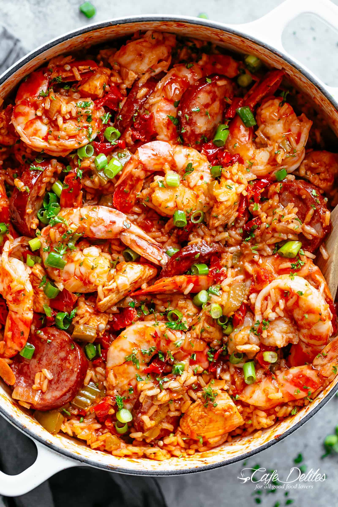

Jambalaya:
Ingredients:
- 2 tablespoons olive oil
- 400g Andouille sausage, sliced
- 1 onion, diced
- 1 bell pepper, diced
- 2 celery stalks, diced
- 3 cloves garlic, minced
- 400g chicken breast, diced
- 1 can (400g) diced tomatoes
- 300g long grain rice
- 700ml chicken broth
- 1 teaspoon dried thyme
- 1 teaspoon dried oregano
- 1 teaspoon paprika
- 1/2 teaspoon cayenne pepper (adjust to taste)
- Salt and pepper to taste
- Fresh parsley for garnish
Method:
- Heat olive oil in a large pot over medium heat. Add the Andouille sausage and cook until browned. Remove and set aside.
- In the same pot, add onion, bell pepper, celery, and garlic. Cook until softened.
- Add chicken breast and cook until browned.
- Stir in diced tomatoes, rice, chicken broth, thyme, oregano, paprika, cayenne pepper, salt, and pepper. Bring to a simmer.
- Reduce heat to low, cover, and simmer for 20-25 minutes, or until rice is cooked and most of the liquid is absorbed.
- Stir in the cooked Andouille sausage.
- Garnish with fresh parsley before serving.
Click here to return to homepage!